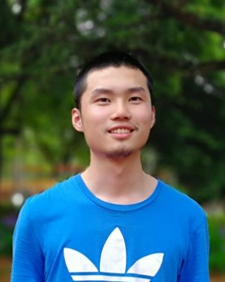
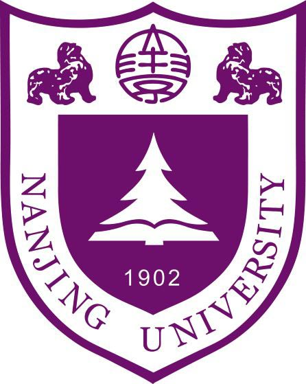

|  | 茅 宇 峰 2018级本科生 物理拔尖计划 匡亚明学院 南京大学 [我的邮箱 yufeng.m@outlook.com] [English Page] |

|  |
个人信息
经过我在匡亚明学院, 南京大学一年的基础学科学习后（2018-2019），决定选择数理方向物理专业作为我的专业，并且选修一些计算机相关课程。【GPA排名（前三学期） 9/103】
[go top]
科研兴趣
在修读了吴盛俊老师的 量子信息原理与应用 课程后我对量子计算和量子算法产生了浓厚的兴趣，在课程学习之余我研读了Quantum Computation and Quantum Information(Michael A. Nielsen & Isaac L. Chuang) 和相关的一些文献，对量子计算的实现和量子纠错算法非常感兴趣。我对学习理论和构建模型有浓厚的兴趣，因为我享受一步步充分了解某件事物的快乐。 [go top]
奖项及荣誉
[go top]杂项
1. 匡亚明学院学生会综合设计部部长
我于2019年7月至2020年9月间担任匡亚明学院学生会综合设计部部长。综合设计部主要负责学院中的设计和宣传工作。我负责调度一个11人组成的小组，完成各种设计宣传类工作。我的主要贡献包括学生会各项重大活动宣传的设计工作，这其中有第22、23届基础学科论坛的视觉设计（它是学校中由学生组织，学校认可的最大的论文竞赛），迎新晚会。另外我也负责新一届部员的教学和培训。综合设计部获得了匡亚明学院学生会2019年最佳部门（唯一），我个人也获得十佳部长的称号。这个链接里是我的部分设计作品。
2.DII-WEB小组
DII-WEB 小组致力于为匡亚明学院的同学的提供 HTTP 服务，我作为2018级小组的负责人主导了两个项目的开展。
3.关于室内wifi分布的研究
计算物理课程大作业，我与邹暨捷、李爽同学合作，实现了一个通过光追法分析房间内WIFI分布的小论文。我在其中负责所有算法设计和编程的工作。
4.担任匡亚明学院2018级心理委员
我担任匡亚明学院2018级心理委员，并培训优秀。
[go top]